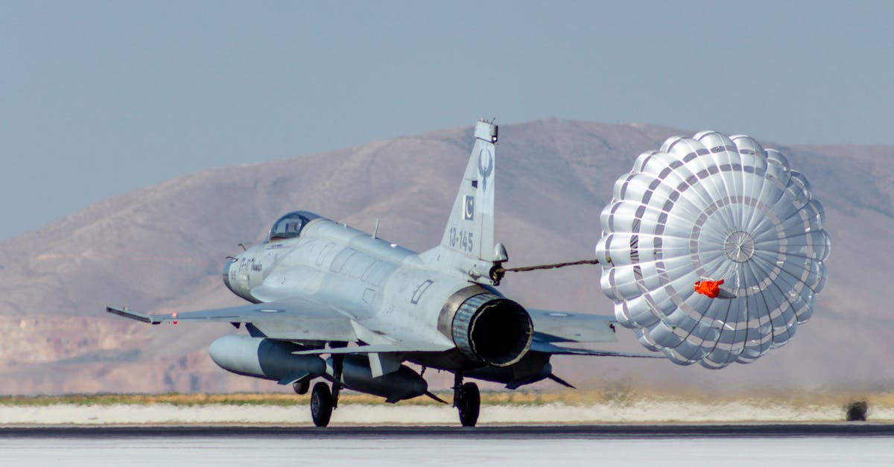

La Poudrière du Moyen-Orient s'enflamme : Le Pétrole en Première Ligne
Le marché mondial de l'énergie est en ébullition. Une récente dépêche d'information en provenance d'Iran, rapportant l'activation de la défense aérienne du pays face à des cibles hostiles, a provoqué une onde de choc, faisant bondir les cours du pétrole. Ces tensions, qui s'intensifient avec Israël et les États-Unis, trouvent un écho particulièrement préoccupant dans la situation critique du détroit d'Ormuz. Ce passage maritime étroit, par lequel transite une part vitale des flux énergétiques mondiaux, est actuellement paralysé, ajoutant une couche d'incertitude et de volatilité à un tableau déjà sombre. La fermeture ou la perturbation de cette artère vitale ne se limite pas à un simple impact sur le prix du baril ; elle résonne à travers toute l'économie mondiale, affectant les coûts de production, le transport et, in fine, le portefeuille des consommateurs. Les analystes financiers scrutent chaque mot, chaque mouvement, car le Moyen-Orient a la fâcheuse tendance à transformer les tensions régionales en secousses économiques globales. L'histoire nous a montré à maintes reprises comment les conflits dans cette région sensible peuvent perturber l'approvisionnement en énergie et déclencher des réactions en chaîne sur les marchés financiers. La question n'est plus de savoir si, mais quand cette nouvelle escalade aura des conséquences plus profondes sur l'économie mondiale. Dans ce contexte, la capacité à anticiper et à réagir rapidement devient primordiale pour les investisseurs avisés.
👉 À lire : Marchés : Des Mouvements Historiques Révèlent des Opportunités

Le Détroit d'Ormuz : Un Goulot d'Étranglement Stratégique
Le détroit d'Ormuz n'est pas une simple étendue d'eau ; c'est le poumon économique de la région et un point névralgique pour le commerce mondial. Chaque jour, des millions de barils de pétrole et de gaz naturel liquéfié y transitent, reliant les producteurs du Golfe persique aux marchés consommateurs du monde entier. Sa fermeture, même temporaire, équivaut à un étranglement de l'offre mondiale, créant un déséquilibre immédiat entre l'offre et la demande. Les rapports faisant état de l'activation de la défense aérienne iranienne, couplés aux tensions persistantes avec Israël et les États-Unis, font craindre une escalade qui pourrait directement affecter la sécurité de ce passage. Les implications sont multiples : une augmentation des coûts de fret maritime, une recherche effrénée de routes alternatives (souvent plus coûteuses et moins efficaces), et une prime de risque accrue sur les contrats pétroliers. Les fluctuations actuelles ne sont donc que le symptôme visible d'une inquiétude bien plus profonde concernant la stabilité géopolitique et la continuité des approvisionnements. Les opérateurs de marché doivent évaluer non seulement le risque immédiat de blocage, mais aussi les conséquences à moyen et long terme d'une instabilité régionale chronique. Comment les marchés réagiront-ils si le détroit reste sous haute tension pendant plusieurs semaines ? C'est la question qui hante les salles de marché.
👉 À lire : Or et Pétrole : Le Défi du Boom Américain et l'IA
L'Or et les Métaux Précieux : Le Refuge Face à l'Incertitude
Dans un tel climat d'incertitude géopolitique et de volatilité sur les marchés de l'énergie, les métaux précieux, et en particulier l'or, retrouvent leur statut de valeur refuge par excellence. Historiquement, l'or a toujours bénéficié des périodes de troubles économiques et politiques. Lorsque les tensions montent, que les conflits éclatent ou que les économies mondiales montrent des signes de faiblesse, les investisseurs se tournent naturellement vers des actifs tangibles et perçus comme plus sûrs. L'or, avec sa longue histoire en tant que réserve de valeur, attire les capitaux cherchant à se prémunir contre l'inflation, la dévaluation monétaire et le risque systémique. La flambée des prix du pétrole, bien que n'étant pas directement un métal précieux, agit comme un catalyseur. Elle alimente l'inflation, érode le pouvoir d'achat et accroît l'aversion au risque, des facteurs qui tendent à soutenir la demande d'or. Les investisseurs ne se contentent plus de réagir aux événements ; ils cherchent à anticiper les mouvements. Dans ce contexte, les stratégies d'investissement basées sur l'analyse des flux géopolitiques et économiques deviennent cruciales. La capacité à interpréter ces signaux faibles et à ajuster rapidement son portefeuille est la clé pour naviguer dans ces eaux troubles. L'or, souvent considéré comme le baromètre de l'inquiétude mondiale, pourrait bien continuer sur sa lancée haussière tant que les tensions persisteront.

L'IA : Un Outil Essentiel pour Naviguer la Volatilité
Face à la complexité croissante des marchés financiers et à l'accélération des flux d'informations, l'intelligence artificielle (IA) s'impose comme un outil indispensable pour les investisseurs. Dans des contextes de crise comme celui que nous vivons actuellement avec les tensions au Moyen-Orient et la perturbation du détroit d'Ormuz, les marchés réagissent de manière souvent imprévisible et rapide. Les algorithmes traditionnels peinent à suivre le rythme effréné des nouvelles, des analyses et des réactions émotionnelles des traders humains. C'est là que l'IA entre en jeu. Les agents IA spécialisés dans le trading de métaux précieux, comme ceux développés par GoldTrade AI, sont capables de traiter et d'analyser en temps réel des volumes massifs de données : actualités géopolitiques, indicateurs économiques, mouvements de prix sur les marchés de l'énergie et des matières premières, sentiment des marchés, etc. Ils peuvent identifier des corrélations subtiles et des opportunités d'investissement que l'œil humain pourrait manquer. L'avantage majeur réside dans leur capacité à opérer 24h/24, 7j/7, sans être influencés par la fatigue ou les émotions. Cela permet une réactivité inégalée face aux événements soudains, comme la flambée du pétrole due aux tensions iraniennes. Ces systèmes peuvent ajuster les positions, sécuriser les gains ou limiter les pertes à une vitesse fulgurante, offrant ainsi un avantage concurrentiel significatif dans un environnement de marché aussi turbulent. La question n'est plus de savoir si l'IA peut aider, mais plutôt comment l'intégrer efficacement dans une stratégie d'investissement robuste.
Au-delà du Pétrole : L'Impact sur les Autres Métaux Précieux
Si le pétrole est souvent le premier indicateur à réagir aux tensions géopolitiques au Moyen-Orient, l'impact ne s'arrête pas là. Les autres métaux précieux, tels que l'argent, le platine et le palladium, sont également susceptibles d'être affectés, bien que de manière parfois plus indirecte. L'argent, souvent considéré comme le jumeau de l'or, bénéficie généralement des mêmes mouvements, agissant comme une valeur refuge et un actif d'investissement. Sa demande industrielle, bien que significative, peut être temporairement éclipsée par son rôle d'actif monétaire en période de crise. Le platine et le palladium, quant à eux, sont plus sensibles aux cycles économiques et à la demande industrielle, notamment dans le secteur automobile (catalyseurs). Cependant, une flambée prolongée des prix de l'énergie, induite par les perturbations du détroit d'Ormuz, peut entraîner une hausse des coûts de production pour l'extraction de ces métaux. De plus, une récession économique mondiale, crainte en cas d'escalade majeure, pourrait peser sur leur demande industrielle. Néanmoins, dans un environnement global où l'incertitude règne, même ces métaux industriels peuvent trouver un soutien temporaire grâce à leur lien avec l'or et l'argent. Les stratégies d'investissement doivent donc considérer l'ensemble du spectre des métaux précieux, en analysant les dynamiques spécifiques à chacun tout en tenant compte du contexte macroéconomique et géopolitique global. L'IA aide à distinguer ces nuances complexes.

Stratégies d'Investissement à l'Ère de l'IA et de l'Incertitude
Dans un monde où les événements géopolitiques peuvent déclencher des mouvements de marché fulgurants, les stratégies d'investissement traditionnelles montrent leurs limites. L'avènement de l'intelligence artificielle offre de nouvelles perspectives pour naviguer cette complexité. Pour les investisseurs intéressés par l'or et les métaux précieux, il ne s'agit plus seulement de suivre les cours, mais d'intégrer une analyse prédictive basée sur une multitude de facteurs. Une stratégie efficace pourrait impliquer la diversification, non seulement entre différentes classes d'actifs (actions, obligations, métaux précieux), mais aussi au sein des métaux précieux eux-mêmes, en tenant compte des spécificités de chacun (or, argent, platine, palladium). L'utilisation d'un agent IA de trading permet d'optimiser cette diversification en continu, en ajustant les allocations en fonction des signaux du marché et des prévisions. Par exemple, un agent IA pourrait identifier une opportunité d'augmenter l'exposition à l'or face à la montée des tensions au Moyen-Orient, tout en surveillant les indicateurs industriels qui pourraient influencer l'argent ou le platine. De plus, la capacité de l'IA à exécuter des transactions à haute fréquence permet de capitaliser sur les petites fluctuations de prix, souvent générées par la volatilité accrue. L'objectif est de construire un portefeuille résilient, capable de générer des rendements stables, voire de prospérer, même dans les environnements les plus incertains. Comme le disait un trader fictif expert en IA : "L'IA ne remplace pas l'intelligence humaine, elle l'augmente, permettant de voir au-delà du bruit ambiant."
Perspectives Futures : Vers une Stabilité ou une Escalade ?
L'actualité concernant les tensions au détroit d'Ormuz et l'activation de la défense aérienne iranienne soulève une question fondamentale : s'agit-il d'un incident isolé ou le prélude à une escalade plus large ? Les réponses à cette question auront des répercussions directes et significatives sur les marchés financiers, en particulier sur ceux de l'énergie et des métaux précieux. D'une part, une désescalade rapide et un retour au calme diplomatique pourraient entraîner une correction des prix du pétrole, mais maintiendraient probablement un intérêt soutenu pour l'or comme valeur refuge, compte tenu des cicatrices laissées par la crise et de l'inflation persistante. D'autre part, une intensification des hostilités, même localisée, risquerait de provoquer une nouvelle flambée des prix du pétrole et d'accentuer la fuite vers les actifs considérés comme sûrs, bénéficiant ainsi davantage à l'or et potentiellement à l'argent. Les politiques monétaires des grandes banques centrales, notamment la Réserve Fédérale américaine, continueront également de jouer un rôle clé. Les décisions concernant les taux d'intérêt peuvent influencer la force du dollar, et par conséquent, le prix de l'or libellé en dollars. L'environnement reste donc complexe et multidimensionnel. Les investisseurs, qu'ils soient humains ou assistés par l'IA, devront rester vigilants, analyser en permanence les données et adapter leurs stratégies. La capacité à anticiper ces évolutions, grâce à des outils comme l'IA, sera déterminante pour la performance.
Conclusion
La situation tendue autour du détroit d'Ormuz, avec l'activation de la défense aérienne iranienne, a agi comme un puissant catalyseur sur les marchés de l'énergie, faisant grimper les prix du pétrole. Cet événement souligne une fois de plus la fragilité de l'approvisionnement mondial en énergie et l'importance capitale de cette voie maritime stratégique. Dans ce contexte d'incertitude géopolitique accrue, les métaux précieux, et notamment l'or, s'affirment comme des refuges privilégiés pour les investisseurs cherchant à protéger leur capital. La volatilité générée par de tels événements crée à la fois des risques et des opportunités. C'est dans ces moments que l'apport de l'intelligence artificielle devient particulièrement précieux. Les agents IA, capables d'analyser en temps réel une quantité phénoménale d'informations et d'opérer sans relâche, offrent une capacité d'anticipation et de réaction inégalée. Pour ceux qui souhaitent naviguer sereinement sur les marchés de l'or et des métaux précieux, en tirant parti de la puissance de l'IA pour identifier les meilleures opportunités 24h/24, GoldTrade AI propose une solution adaptée à l'environnement actuel, complexe mais riche en possibilités pour ceux qui sont bien équipés.